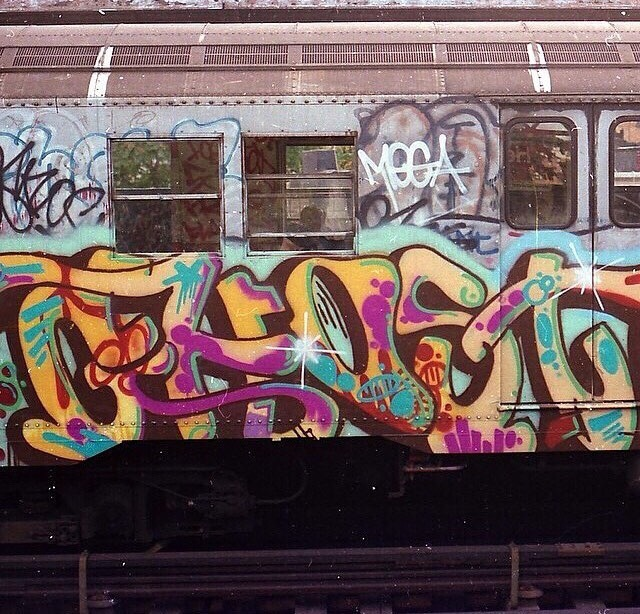
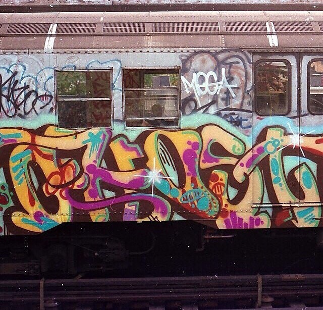

GHOST (RIS)

GHOST (RIS)

Much of New York City’s crime happened on the subway in the late ‘70s. The Lexington Avenue Express landed the nickname the “Mugger’s Express”.
via reddit

Carrie Boretz 1978

1982, next to Stuyvesant High School, 15th and 1st.